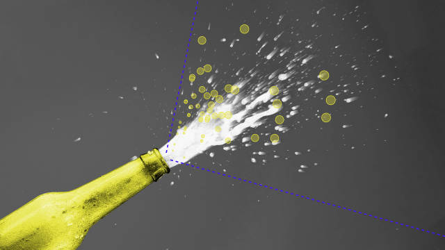

Stories
-
The World through the Eyes of the US
The countries that have preoccupied Americans since 1900
-
The Pudding Cup
The best visual and data-driven stories of 2018
-

most engaging
Internet Boy Band Database
Every boy band to chart the Hot 100 since 1980
-
What Does the Path to Fame Look Like?
Tracking the rise in popularity from Cardi B to Carson Wentz
-

The Celebrity Billboard Project
Tracking the popularity of cultural figures in 2018
-
Life After Death on Wikipedia
What pageviews tell us about how famous people are remembered after they die
-
Easier Scrollytelling with Position Sticky
Leaning on CSS to simplify the process
-
The Most-Viewed NBA Plays in 2017-18
Warning: this video contains a high dosage of LeBron footage.
-

One-Hit Wonders in Sports
The greatest single-season anomalies in the last 30 years
-
The Birthday Paradox Experiment
Your birthday twin is probably reading this right now. Because math.
-

most engaging
The Structure of Stand-Up Comedy
The genius of Ali Wong’s Netflix special
-

10 Things Everyone Hates About You
Exploring over 30 million feelings towards 3,000+ topics
-
The Pudding Awards
Our favorite projects on the internet in 2017
-

An Introduction to Scrollama.js
The what, why, and how to use scrollama.js for your next scrollytelling story
-

What is a Superteam in the NBA?
Defining what a superteam is with data
-

An Analysis of Driving Times to Abortion Clinics in the US
Mapping the cities and places with the worst access
-

She Giggles, He Gallops
Analyzing gender tropes in film with screen direction from 2,000 scripts
-
How Many Users Resize Their Browser?
A look at actual data and how to deal with it
-
Free Willy and Flipper by the Numbers
The past, present, and future of captive whales and dolphins
-

Plot Trends for Top-Grossing Film from the Past 50 Years
This is a story about how film plots mirror (or shape) historical events.
-

The Making of the Weighted Pivot Scatter Plot
How (and why) the interactive chart was born
-

The Most Timeless NBA Plays
Historic NBA games and plays, ranked by YouTube views
-
Responsive Scrollytelling Best Practices
How to plan or adapt a scrollytelling story for mobile.
-

most discussed
What City is the Microbrew Capital of the US?
Using beer review data to rank the best cities in the country
-

How Russell Westbrook Can Average a Triple-Double
As of March 10, Russell Westbrook is averaging a triple-double.
-
The Geographic Divide of Oscars Films
Mapping the popularity of Oscar-nominated films in 2017
-
NBA Last Two Minute Report
A review of the NBA officiating from the Last Two Minute Report
-
How to Implement Scrollytelling with Six Different Libraries
How to tackle a simple scroll-driven chart using six different libraries
-
The Unlikely Odds of Making it Big
What three years and 75,000 shows tell us about the chance of success
-
How News Media Covers Trump & Clinton
Analyzing 12,147 images of Trump and Clinton
-
Twenty Years of the NBA Redrafted
Using career stats to prove the best/worst NBA draft picks, ever